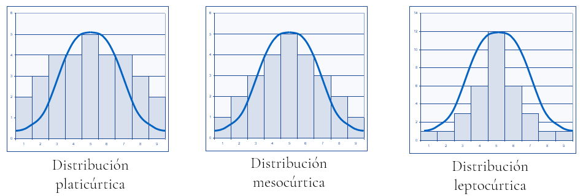
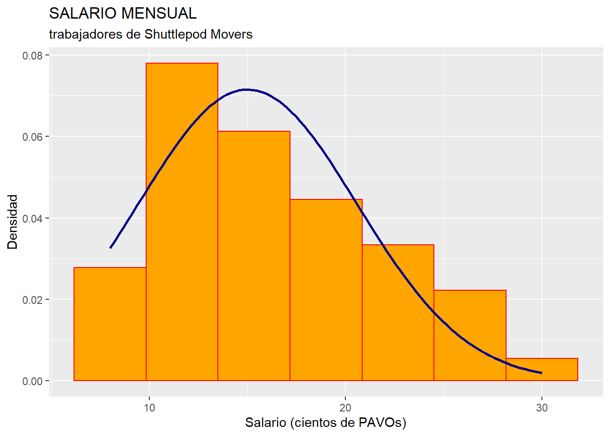

4 Estadística descriptiva.

Figura 4.1. Pilotos de Shuttlepod Movers.
La Estadística Descriptiva es la parte de la Ciencia Estadística que se ocupa de la recopilación de datos, su depuración, y la caracterización, mediante tales datos, de un conjunto de casos o individuos.
Los datos se organizan en variables y/o atributos.
Las variables son características de los casos o individuos en estudio que se plasman en valores que están expresados en escala métrica. Los atributos son características de los casos o individuos en estudio que se concretan en diversas categorías (si el atributo tiene escala nominal) o niveles (si el atributo tiene escala ordinal). Los atributos se denominan también variables categóricas, cualitativas o factores.
Centrándonos en las variables (características que afectan a un grupo de casos o individuos, y que se concretan en valores que poseen una escala métrica), podemos plantearnos el estudio de una única variable sin tener en cuenta la existencia de otras variables que caracterizan al mismo grupo de casos o individuos. En tal caso estaremos planteando un análisis estadístico univariante. Si nuestro análisis se centra en cómo dos variables caracterizan al mismo conjunto de individuos o casos, y la posible relación entre ambas, estaremos planteando un análisis bivariante. Generalizando, si estudiamos cómo un grupo de variables caracterizan de modo conjunto a un mismo grupo de casos o individuos, estaremos planteando un análisis estadístico multivariante.
4.1  Análisis univariante.
Análisis univariante.
En el análisis estadístico univariante, estudiamos cómo una única característica (nos centraremos en una variable, aunque también puede tratarse de un atributo) afecta a un grupo de casos, individuos o elementos. Por ejemplo, la variable podría ser el salario percibido por un grupo de individuos que podría ser el conjunto de trabajadores en nómina en una empresa. Otro ejemplo podría ser el de la (variable) rentabilidad económica obtenida por un grupo de empresas pertenecientes a un determinado sector económico.
El conjunto de pares formado por cada valor que puede tomar la variable en estudio (o categoría o nivel, en el caso de un atributo) y el número de casos que toman tal valor se denomina distribución de frecuencias de la variable.
¿Cómo podemos estudiar el modo en que afecta una variable, de modo global, a un grupo de casos? Mediante el cálculo de una serie de medidas. Las medidas son instrumentos matemáticos que extraen y sintetizan la información contenida en una distribución de frecuencias.
Hay diferentes tipos de medidas, principalmente las de posición, dispersión y forma.
Antes de profundizar en las principales medidas, su significado y su obtención; mostraremos el modo de presentar en R, mediante la creación de tablas, los datos referentes a un grupo de individuos y las variables o atributos que los caracterizan, y las distribuciones de frecuencias univariantes.
Se va a utilizar, a modo de ilustración, los datos correspondientes a los salarios percibidos por una de las empresas de transporte de mercancías interestelar del proyecto R-Stars.
4.2  Shuttlepod Movers: ¿una estructura salarial demasiado plana?
Shuttlepod Movers: ¿una estructura salarial demasiado plana?
Shuttlepod Movers es una empresa de transporte interestelar de mercancías fundada en el planeta Arrakis, en la Gran Nube de Magallanes. Constituida como Sociedad Anónima Galáctica (SAG), atiende rutas medianas y largas con una flota de 47 cargueros espaciales y una plantilla de 49 trabajadores. Su actual CEO es Tasha Tachybaptus.

Figura 4.2. Nuevo carguero TranStar v.6.
La siguiente tabla resume los principales indicadores de la compañía:
| Indicador | Valor |
|---|---|
| Activos | 249,4 mil PAVOs |
| Flota | 47 cargueros |
| Edad media flota | Madura |
| Rutas operadas | 594 |
| Ingresos | 241,7 mil PAVOs |
| Beneficio neto | 180,8 mil PAVOs |
| Margen operativo | 74,8% |
| Rentabilidad económica | 72,5% |
| Liquidez | 0,56 |
| Plantilla | 49 trabajadores |
Tabla 4.1. Ficha resumen de Shuttlepod Movers
A pesar de presentar márgenes y rentabilidades muy elevados, la empresa tiene una liquidez reducida (0,56), lo que supone un riesgo a corto plazo. Pero lo que más preocupa a Tasha Tachybaptus es otra cosa: sospecha que la estructura salarial de la empresa es demasiado plana. Prácticamente todos los empleados perciben salarios similares, sin una diferenciación clara entre niveles de cualificación. Esto podría estar dificultando la atracción y retención de perfiles altamente cualificados, que son imprescindibles en un sector tecnológicamente exigente como el transporte interestelar.
Tasha nos pide un análisis descriptivo de la variable SALARIO que responda a estas preguntas: ¿cuál es el nivel salarial típico de la plantilla? ¿Cuán dispersos están los salarios? ¿La distribución salarial es simétrica o está sesgada hacia algún extremo? En definitiva: ¿es cierto que la estructura salarial de Shuttlepod Movers es excesivamente homogénea?
Vamos a responder a estas preguntas aplicando las herramientas de la estadística descriptiva.
4.3  Representando datos y distribuciones de frecuencias en tablas con R.
Representando datos y distribuciones de frecuencias en tablas con R.
Para aprender a representar los datos referentes a las variables y atributos que caracterizan a un grupo de casos o individuos, y las distribuciones de frecuencias univariantes, vamos a suponer que trabajamos dentro de un proyecto que hemos creado previamente, de nombre “explora”. Dentro de la carpeta del proyecto guardaremos el script llamado “describe_rstars.R” y el archivo de Microsoft® Excel® llamado “trabajadores.xlsx”. Al final del capítulo se encuentran los enlaces correspondientes a estos archivos.
El archivo de Excel® recoge algunos datos correspondientes a la plantilla que compone el personal de la compañía Shuttlepod Movers (hoja “Datos”), tales como el salario percibido (variable SALARIO, expresada en cientos de PAVOs), el nivel de estudios (atributo NESTUDIOS) y departamento al que se pertenece (atributo DEP).
Las primeras líneas del script se refieren, como ya hemos visto en otras secciones del libro, a la limpieza de la memoria o Global Environment, eliminando objetos que se hayan podido crear con anterioridad, carga de los paquetes necesarios, e importación de los datos:
# Script para la construcción de tablas de datos
# y trabajo con distribuciones de frecuencias univariantes.
# Limpiando el Global Environment
rm(list = ls())
# Cargando paquetes
library(readxl)
library(gtExtras)
library(knitr)
library(kableExtra)
library(dplyr)
library(DescTools)
library(moments)
library(ggplot2)
## DATOS
# Importando datos desde Excel
datos <- read_excel("trabajadores.xlsx",
sheet = "Datos",
na = c("n.d."))
datos <- data.frame(datos, row.names = 1)
# visualizando el data frame de modo elegante con {gtExtras}
datos_df_graph <- gt_plt_summary(datos)
datos_df_graph| datos | ||||||
| 49 rows x 3 cols | ||||||
| Column | Plot Overview | Missing | Mean | Median | SD | |
|---|---|---|---|---|---|---|
| SALARIO | 0.0% | 16.0 | 15.0 | 5.6 | ||
NESTUDIOSUniversitarios, Medios and Básicos |
0.0% | — | — | — | ||
DEPPersonal Navegación, Almacén, Gestión Interna, Gestión Clientes, Dirección, Marketing and Coordinación |
0.0% | — | — | — | ||
Tabla 4.2
Los datos se han almacenado en el data frame “datos”, y hemos presentado las variables contenidas en el mismo con la función gt_plt_summary() del paquete gtExtras. Sabemos que, simplemente escribiendo el nombre del data frame, aparecerán en la consola los datos almacenados en él. No obstante, esta presentación no es muy elegante para presentar los datos. Vamos a presentarlos de un modo más amigable, mediante la confección de una “tabla”.
Un paquete de R muy popular para generar tablas de datos es knitr. Este paquete contiene la función kable(), que permite generar tablas en varios formatos y con diversas características que pueden ser personalizadas (como el título de la tabla). Si queremos personalizar más aún la apariencia de nuestras tablas, podemos usar las facilidades del paquete kableExtra, que complementa las posibilidades que ofrece la función kable() de knitr.
Para hacer una tabla con nuestros casos y variables, es decir, para escribir nuestro data frame “datos” de un modo más elegante, activaremos los paquetes anteriores (si no lo hemos hecho ya), y generaremos nuestra tabla con los datos contenidos en el data frame “datos”. El código para generar la tabla, y el resultado, es el siguiente:
# Tabla de datos
datos %>%
kable(caption = "Trabajadores de Shuttlepod Movers",
col.names = c("Trabajador", "Salario", "Nivel de estudios",
"Departamento")) %>%
kable_styling(full_width = F,
bootstrap_options = c("striped", "bordered", "condensed"),
position = "center",
font_size = 11) %>%
row_spec(0, bold= T, align = "c") %>%
row_spec(1:(nrow(datos)), bold= F, align = "c")Primero llamamos al data frame a partir de cuyos datos vamos a generar la tabla, “datos”. Con el operador pipe %>%, ligamos los datos del data frame al diseño de la tabla realizado con la función kable() de knitr. kable() tiene diversos argumentos, entre los que destacan:
caption =: Este argumento informa del título de la tabla.col.names =: Este argumento, opcional, fija el nombre para las columnas de la tabla, si no queremos que aparezcan los nombres “por defecto”, que son los nombres de cada columna en el propio data frame.
Luego, con el operador pipe %>% informamos de que vamos a completar o personalizar el diseño de esta tabla con otras funciones complementarias del paquete kableExtra. En primer lugar, utilizamos la función kable_styling(), que aporta algunas características adicionales a la tabla, según sus argumentos:
full_width =: este argumento ha de tener un valor lógico, y se refiere a si deseamos que la tabla ocupe todo el ancho del documento (TRUE) o solo lo necesario (FALSE).bootstrap_options =: este argumento es de tipo alfanumérico, y sirve para fijar ciertas características estéticas complementarias. “striped” se refiere a que las filas aparezcan sombreadas de modo alternativo, “bordered” se refiere a que cada fila quede delimitada por unas finas líneas en la parte superior y en la inferior, “condensed” significa que la tabla tendrá un aspecto más compacto.position =: este argumento se utiliza para situar la tabla centrada, a la izquierda del párrafo, o a la derecha.font_size =: este argumento numérico se refiere al tamaño de los caracteres, lo cual es importante a la hora de que una tabla “quepa” en un documento de determinada anchura.
Por último, hacemos uso dos veces de la función row_spec() del paquete kableExtra. Esta función sirve para personalizar algo más las filas concretas de la tabla que consideremos. El encabezado se identifica como la fila “0”. En el ejemplo, se ha utilizado esta función dos veces: una para el encabezado (el primer argumento de la función nos informa de las filas a las que se refiere, en esta ocasión la fila 0), y otra para el resto de filas (desde la fila 1 hasta la que contiene al último caso individuo, la fila con posición nrow(datos)). Los otros argumentos definen si se quiere que los caracteres aparezcan en negrita (bold = ) y cómo deben estar alineados los elementos, dentro de las columnas ( align = ).
El resultado es:
| Trabajador | Salario | Nivel de estudios | Departamento |
|---|---|---|---|
| Luke Diomedea | 8 | Básicos | Almacén |
| Han Bubo | 8 | Medios | Almacén |
| Anakin Falco | 9 | Básicos | Almacén |
| Spock Phoenicopterus | 9 | Básicos | Almacén |
| James Larus | 9 | Medios | Gestión Interna |
| Jean-Luc Hirundo | 10 | Medios | Gestión Interna |
| Data Accipiter | 10 | Medios | Gestión Interna |
| Obi-Wan Psittacus | 10 | Medios | Gestión Interna |
| Lando Columba | 10 | Medios | Personal Navegación |
| Poe Corvus | 10 | Medios | Personal Navegación |
| Finn Anas | 10 | Medios | Personal Navegación |
| Kyle Cygnus | 12 | Básicos | Almacén |
| John Gallus | 12 | Básicos | Almacén |
| Paul Callipepla | 12 | Básicos | Almacén |
| Duncan Trochilus | 12 | Medios | Personal Navegación |
| Gurney Vultur | 12 | Medios | Personal Navegación |
| Deckard Aquila | 12 | Medios | Personal Navegación |
| Roy Struthio | 12 | Universitarios | Gestión Clientes |
| Neo Meleagris | 12 | Universitarios | Marketing |
| Morpheus Pavo | 15 | Básicos | Almacén |
| Cypher Ardea | 15 | Básicos | Almacén |
| T-800 Grus | 15 | Medios | Gestión Interna |
| Jareth Erithacus | 15 | Medios | Gestión Interna |
| Flash Turdus | 15 | Medios | Gestión Interna |
| Starlord Merula | 15 | Medios | Personal Navegación |
| Leia Icterus | 15 | Medios | Personal Navegación |
| Padmé Pharomachrus | 15 | Medios | Personal Navegación |
| Rey Pica | 15 | Medios | Personal Navegación |
| Jyn Ramphastos | 15 | Universitarios | Gestión Clientes |
| Ahsoka Pelecanus | 15 | Universitarios | Gestión Clientes |
| Sabine Spheniscus | 20 | Universitarios | Almacén |
| Hera Apteryx | 20 | Universitarios | Personal Navegación |
| Mon Dromaius | 20 | Universitarios | Personal Navegación |
| Trinity Ara | 20 | Universitarios | Personal Navegación |
| Niobe Serinus | 20 | Universitarios | Marketing |
| Ripley Parus | 20 | Universitarios | Gestión Clientes |
| Sarah Caprimulgus | 20 | Universitarios | Gestión Clientes |
| Chani Corneille | 20 | Universitarios | Gestión Clientes |
| Irulan Sturnus | 22 | Universitarios | Gestión Clientes |
| Leeloo Galbula | 22 | Universitarios | Marketing |
| Ruby Alcedo | 22 | Universitarios | Almacén |
| Zoe Athene | 22 | Universitarios | Personal Navegación |
| River Rhea | 22 | Universitarios | Gestión Interna |
| Kara Steatornis | 22 | Universitarios | Coordinación |
| Laura Regulus | 25 | Universitarios | Dirección |
| Caprica Tinamus | 25 | Universitarios | Dirección |
| Deanna Tauraco | 25 | Universitarios | Dirección |
| Beverly Dendrocolaptes | 25 | Universitarios | Dirección |
| Tasha Tachybaptus | 30 | Universitarios | Dirección |
Tabla 4.3. Trabajadores de Shuttlepod Movers
A veces, puede ocurrir que solo nos interese estudiar una variable (columna del data frame). Además, es posible que el conjunto de casos sea muy numeroso, y que, adicionalmente, algunos de los valores de la variable que queremos estudiar estén repetidos para varios casos. Cuando esto ocurre, una opción interesante es, en lugar de representar en una tabla todos nuestros datos, representar la distribución de frecuencias de la variable (o atributo) que nos interesa. Es lo que vamos a hacer a continuación, tomando SALARIO como variable a analizar.
Lo primero a tener en cuenta es que, en las distribuciones de frecuencias, los valores de la variable suelen disponerse de menor a mayor. Para ello, previamente vamos a ordenar las filas del data frame “datos” según el valor que toma, en el caso correspondiente, la variable SALARIO y, si existen casos con el mismo valor de SALARIO, los ordenaremos por orden alfabético del nombre del caso (nombre del trabajador, o de la fila del data frame). Para realizar este reordenamiento de casos (filas) del data frame de un modo sencillo, vamos a utilizar la función arrange() del paquete dplyr:
# Distribución de frecuencias del salario de los trabajadores de la empresa.
# Colocar los datos
datos <- datos %>% arrange(SALARIO, row.names(datos))Una vez que los casos están ordenados en el data frame de menor a mayor valor de SALARIO, calcularemos, para cada valor de esta variable, el número de casos que lo poseen, es decir, su frecuencia absoluta. Para ello, vamos a crear un objeto denominado “conteo”, que va a ser de clase “table”, de la variable SALARIO. Todo ello lo realizamos mediante la función table(), que contabiliza el número de veces que aparece cada valor de la variable, como se detalla a continuación:
# Contar frecuencias
conteo <- table(datos$SALARIO)
conteo##
## 8 9 10 12 15 20 22 25 30
## 2 3 6 8 11 8 6 4 1Al mostrar en la consola el “conteo”, vemos cómo se compone de dos filas de datos. La primera se corresponde con los valores que toma la variable SALARIO en los distintos casos, y la segunda es el número de casos (frecuencia absoluta) que adopta cada valor. Es decir, el objeto “tabla” es la distribución de frecuencias de la variable SALARIO.
Vamos a convertir este objeto “tabla” en un data frame, llamado “conteo_df”, con el objeto de poder representar de un modo más elegante la distribución de frecuencias. Para ello, ejecutaremos el código:
# Convertir el resultado a un data frame para una mejor visualización
conteo_df <- as.data.frame(conteo)
conteo_df## Var1 Freq
## 1 8 2
## 2 9 3
## 3 10 6
## 4 12 8
## 5 15 11
## 6 20 8
## 7 22 6
## 8 25 4
## 9 30 1Al mostrar en la consola el data frame “conteo_df”, observamos que consta de dos columnas o variables. Var1 recoge los valores que toma la variable SALARIO en el grupo de casos, y Freq es el conjunto de frecuencias absolutas de los diferentes valores. Para que se entienda mejor qué es cada columna, las renombraremos:
A continuación, vamos a calcular el resto de frecuencias que suelen calcularse para una variable. La frecuencia total, N, que es la suma de todas las frecuencias absolutas, es decir, el número total de casos, se puede calcular fácilmente como:
# Calcular y guardar la frecuencia total
N <- sum(conteo_df$Frecuencia)La serie de frecuencias absolutas acumuladas se calcularán del siguiente modo:
# Calcular frecuencias absolutas acumuladas
conteo_df$Frecuencia_acum <- cumsum(conteo_df$Frecuencia)Como sabemos, la última frecuencia absoluta acumulada debe coincidir con la frecuencia total. Por último, calcularemos las frecuencias relativas, que son las frecuencias absolutas divididas por la frecuencia total, y recogen la proporción de casos correspondientes al valor de la variable:
# Calcular frecuencias relativas
conteo_df$Frecuencia_R <- conteo_df$Frecuencia / N
# Calcular frecuencias relativas acumuladas
conteo_df$Frecuencia_R_acum <- cumsum(conteo_df$Frecuencia_R)La suma de las frecuencias relativas es siempre 1 (el 100% de los casos). Además, la última frecuencia relativa acumulada siempre es, igualmente, 1.
Ahora pasaremos a construir una tabla que recoja la distribución de frecuencias de la variable SALARIO (con los diversos tipos de frecuencias). Para ello, simplemente hemos de aplicar al data frame “conteo_df” las funciones kable() del paquete knitr, y el resto de funciones auxiliares del paquete kableExtra:
conteo_df %>%
kable(caption = "Distribución de frecuencias de salarios. Shuttlepod Movers",
col.names = c("x(i) = Salario", "Frecuencia absoluta n(i)",
"Frecuencia absoluta acum. N(i)", "Frecuencia relativa f(i)",
"Frecuencia relativa acum. F(i)"),
digits = c(0, 0, 0, 2, 2),
format.args = list(decimal.mark = ".", scientific = FALSE)) %>%
kable_styling(full_width = F,
bootstrap_options = c("striped", "bordered", "condensed"),
position = "center",
font_size = 11) %>%
row_spec(0, bold= T, align = "c") %>%
row_spec(1:(nrow(conteo_df)), bold= F, align = "c")| x(i) = Salario | Frecuencia absoluta n(i) | Frecuencia absoluta acum. N(i) | Frecuencia relativa f(i) | Frecuencia relativa acum. F(i) |
|---|---|---|---|---|
| 8 | 2 | 2 | 0.04 | 0.04 |
| 9 | 3 | 5 | 0.06 | 0.10 |
| 10 | 6 | 11 | 0.12 | 0.22 |
| 12 | 8 | 19 | 0.16 | 0.39 |
| 15 | 11 | 30 | 0.22 | 0.61 |
| 20 | 8 | 38 | 0.16 | 0.78 |
| 22 | 6 | 44 | 0.12 | 0.90 |
| 25 | 4 | 48 | 0.08 | 0.98 |
| 30 | 1 | 49 | 0.02 | 1.00 |
Tabla 4.4. Distribución de frecuencias de salarios. Shuttlepod Movers
Hemos de advertir que en la función kable() se han insertado dos nuevos argumentos:
digits =es un vector que establece, para cada columna, el número de decimales a presentar en la tabla (si es una columna con datos categóricos, se indicará con el valor NA).format.args =es una “lista” que controla aspectos de formato como si los decimales se indican con un punto o una coma, o si en cifras muy grandes se debe utilizar notación científica.
En cuanto a la interpretación de la distribución, una primera mirada a los datos ya apunta en la dirección de la sospecha de la CEO: la mayor parte de los trabajadores percibe entre 12 y 20 cientos de PAVOs, lo que supone cerca del 70% de la plantilla. Los salarios bajos (8–10) y los más altos (25–30) son minoritarios. La distribución parece, efectivamente, concentrada en los niveles intermedios. Pero para confirmar esta impresión con rigor necesitaremos calcular las medidas de dispersión y forma.
Hay ocasiones en las que la cantidad de valores diferentes que toma la variable analizada para los diferentes casos es muy elevada. Esto puede deberse, por ejemplo, a que el número de casos es muy elevado, o a que la variable es de naturaleza continua, y puede tomar una gran variedad de posibles valores (incluso infinitos). En estos casos, un modo de representar la distribución de frecuencias de la variable en una tabla de dimensión reducida es agrupando los valores en intervalos. Esto es lo que vamos a hacer ahora con la variable SALARIO.
La primera tarea a realizar será formar los intervalos. Para ello podemos usar la función cut(), que permite decidir el número de intervalos (de la misma amplitud) en que queremos dividir el rango que va desde el menor valor de la distribución (menor salario) al mayor valor (mayor salario). Vamos a controlar el número de intervalos mediante una constante k. Si en lugar de decidir nosotros este número, preferimos que sea calculado por un método objetivo, como el de Sturges, ligaremos k al método:
# Distribución de frecuencias agrupadas en intervalos
# del salario de los trabajadores de la empresa.
# Crear los intervalos (método de Sturges)
k <- nclass.Sturges(datos$SALARIO)
datos$intervalos <- cut(datos$SALARIO, breaks = k, include.lowest = TRUE)
levels(datos$intervalos)## [1] "[7.98,11.1]" "(11.1,14.3]" "(14.3,17.4]" "(17.4,20.6]" "(20.6,23.7]" "(23.7,26.9]"
## [7] "(26.9,30]"El resultado del código anterior es una nueva columna en el data frame “datos”, llamada “intervalos”, que informa, para cada caso, cuál de los intervalos calculados lo contiene. El argumento lógico include.lowest = se especifica para indicar que el intervalo inferior es cerrado por la izquierda. Lo usual es que, salvo este, el resto sean abiertos, es decir, que los casos que toman como valor de la variable un extremo de intervalo se contabilicen dentro del intervalo donde ese valor es el extremo superior.
La columna “intervalos” es de la clase factor. Precisamente, los posibles “niveles” de ese factor son los intervalos que se han creado con cut().
Las siguientes líneas de código son similares a las que vimos en el caso de distribuciones de frecuencias no agrupadas: se creará un objeto “tabla” para contabilizar el número de casos que pertenecen a cada intervalo (frecuencias absolutas), se transformará este objeto en un data frame para poder trabajar de un modo más fácil, y se cambiarán el nombre de las dos columnas para que se entienda mejor:
# Contar las frecuencias de cada intervalo
conteo_intervalos <- table(datos$intervalos)
# Convertir el resultado a un data frame para una mejor visualización
conteo_intervalos_df <- as.data.frame(conteo_intervalos)
# Renombrar las columnas para mayor claridad
colnames(conteo_intervalos_df) <- c("Intervalo", "Frecuencia")Con todo lo anterior, se obtiene un data frame denominado “conteo_intervalos_df”, que contiene dos columnas: la columna “Intervalo”, con los intervalos calculados, y la columna “Frecuencia”, con el número de casos que tienen un salario incluido dentro de cada intervalo salarial.
Antes de proceder a diseñar la tabla de presentación de la distribución de frecuencia con kable(), vamos a obtener, para incluir en la tabla, otras informaciones que suelen ser presentadas junto a las frecuencias absolutas de cada intervalo.
Una de estas informaciones es lo que denominamos marca de clase de un intervalo. La marca de clase de un intervalo de valores es simplemente el punto medio de dicho intervalo. Para calcular las marcas de clase, podemos generar los mismos puntos de corte que usó cut() y obtener el promedio de cada par de extremos consecutivos:
# Calcular la marca de clase de cada intervalo
breaks <- seq(min(datos$SALARIO), max(datos$SALARIO), length.out = k + 1)
marca_clase <- (breaks[-length(breaks)] + breaks[-1]) / 2La función seq() genera una secuencia de k + 1 puntos equidistantes entre el valor mínimo y el máximo de SALARIO, que son los extremos de los k intervalos. Luego, breaks[-length(breaks)] son los extremos inferiores y breaks[-1] los extremos superiores, y su promedio es la marca de clase.
El resto de código integra el vector “marca_clase” en el data frame “conteo_intervalos_df” como una variable más, reordena las columnas con select(), calcula el resto de frecuencias (absoluta acumulada, relativa, relativa acumulada), y diseña la tabla de presentación:
# Agregar la columna "marca_clase" al data frame
conteo_intervalos_df$marca_clase <- marca_clase
# Cambiar el orden de las columnas en el data frame con dplyr
conteo_intervalos_df <- conteo_intervalos_df %>%
select(Intervalo, marca_clase, Frecuencia)
# Calcular y guardar la frecuencia total
N_agre <- sum(conteo_intervalos_df$Frecuencia)
# Calcular frecuencias absolutas acumuladas
conteo_intervalos_df$Frecuencia_acum <- cumsum(conteo_intervalos_df$Frecuencia)
# Calcular frecuencias relativas
conteo_intervalos_df$Frecuencia_R <- conteo_intervalos_df$Frecuencia / N_agre
# Calcular frecuencias relativas acumuladas
conteo_intervalos_df$Frecuencia_R_acum <- cumsum(conteo_intervalos_df$Frecuencia_R)
# Mostrar el resultado
conteo_intervalos_df %>%
kable(caption = "Distribución de frecuencias agrupadas en intervalos de salarios. Shuttlepod Movers",
col.names = c("Intervalo salarial",
"Marca de clase x(i)",
"Frecuencia absoluta n(i)",
"Frecuencia absoluta acum. N(i)",
"Frecuencia relativa f(i)",
"Frecuencia relativa acum. F(i)"),
digits = c(NA, 2, 0, 0, 2, 2),
format.args = list(decimal.mark = ".", scientific = FALSE)) %>%
kable_styling(full_width = F,
bootstrap_options = c("striped", "bordered", "condensed"),
position = "center",
font_size = 11) %>%
row_spec(0, bold= T, align = "c") %>%
row_spec(1:(nrow(conteo_intervalos_df)), bold= F, align = "c")| Intervalo salarial | Marca de clase x(i) | Frecuencia absoluta n(i) | Frecuencia absoluta acum. N(i) | Frecuencia relativa f(i) | Frecuencia relativa acum. F(i) |
|---|---|---|---|---|---|
| [7.98,11.1] | 9.57 | 11 | 11 | 0.22 | 0.22 |
| (11.1,14.3] | 12.71 | 8 | 19 | 0.16 | 0.39 |
| (14.3,17.4] | 15.86 | 11 | 30 | 0.22 | 0.61 |
| (17.4,20.6] | 19.00 | 8 | 38 | 0.16 | 0.78 |
| (20.6,23.7] | 22.14 | 6 | 44 | 0.12 | 0.90 |
| (23.7,26.9] | 25.29 | 4 | 48 | 0.08 | 0.98 |
| (26.9,30] | 28.43 | 1 | 49 | 0.02 | 1.00 |
Tabla 4.5. Distribución de frecuencias agrupadas en intervalos de salarios. Shuttlepod Movers
La distribución agrupada confirma la concentración salarial: casi tres cuartas partes de la plantilla percibe entre 8 y 20 cientos de PAVOs. Los tramos superiores muestran menor densidad: solo un 10% supera los 23,7 cientos de PAVOs, y el salario máximo (30 cientos) corresponde a un único trabajador. La sospecha de Tasha va tomando forma, pero necesitamos medidas concretas.
4.4 Medidas de posición.
Las medidas de posición son instrumentos matemáticos que pretenden, mediante un único valor o muy pocos valores, caracterizar de modo global la distribución de frecuencias de una variable determinada.
Las medidas de posición se pueden clasificar en medidas de posición central, y en medidas de posición no central (principalmente, los llamados cuantiles).
Las principales medidas de posición central son: la media, la mediana y la moda. Dentro de la media, podemos distinguir la media aritmética, la geométrica y la armónica. De ellas, nos centraremos en la más común: la media aritmética.
La media aritmética de la distribución de frecuencias de una variable X se calcula como:
\[ \overline{x} = \frac{1}{N} \sum_{i=1}^{h} x_i n_i \]
Hemos de tener en cuenta en la fórmula anterior que N es la frecuencia total, y h es el número de valores diferentes que toma la variable.
Si las frecuencias de todos los valores de la variable son 1 (distribución de frecuencias unitarias), lógicamente la media pasará a ser:
\[
\overline{x} = \frac{1}{N} \sum_{i=1}^{N} x_i
\] En R, la función para obtener la media de una variable es mean(). Así, para obtener el salario medio de la variable SALARIO de los trabajadores de la empresa, ejecutaremos el código:
## MEDIDAS
# Media aritmética.
media <- mean(datos$SALARIO)
media## [1] 16.04082El salario medio de los trabajadores de Shuttlepod Movers es de 16,04 cientos de PAVOs (1.604 PAVOs). Esto nos da un primer indicador del nivel salarial típico de la plantilla: si la masa salarial se repartiera igualitariamente entre todos los trabajadores, cada uno percibiría esa cantidad.
¿Qué significado tiene la media aritmética? La media aritmética es el “centro de gravedad” de la distribución, el punto de equilibrio, en el sentido de que, si todos los trabajadores ganaran el salario medio, no habría diferencias salariales aun cuando la “masa” salarial invertida por la empresa permanecería invariable. Es decir, la media aritmética supone un reparto igualitario de la masa total de la variable.
Entre sus ventajas destaca el que, para variables (escala métrica) es siempre calculable y única. Como inconvenientes, que pierde su representatividad ante la existencia de casos atípicos o outliers, y que no se puede calcular en el caso de trabajar con atributos, variables cualitativas o factores (escalas nominal u ordinal).
La mediana es el valor que se corresponde con el caso o casos que dividen a la distribución en dos grupos con el mismo número de elementos (frecuencias), siempre teniendo en cuenta que, previamente, la distribución ha sido ordenada según los valores de la variable en estudio, de menor a mayor. Si la distribución tiene frecuencia total par, los casos “frontera” entre los dos grupos en que queda dividida la distribución son dos, por lo que, si estos casos asumen valores diferentes en la variable estudiada, podría ocurrir que hubiera dos medianas diferentes. En tal circunstancia, se suele tomar, como convenio, el promedio de ambos valores para tener una única mediana.
En R, la función para obtener la mediana de una variable es median(). De este modo, para obtener el salario mediano de la variable SALARIO de los trabajadores de la empresa, ejecutaremos el código:
# Mediana
mediana <- median(datos$SALARIO)
mediana## [1] 15La mediana es 15 cientos de PAVOs. Esto significa que la mitad de la plantilla percibe 15 o menos cientos de PAVOs, y la otra mitad percibe 15 o más. Observemos que la mediana (15) es ligeramente inferior a la media (16,04), lo que sugiere la existencia de algunos salarios altos que “tiran” de la media hacia arriba.
Como ventajas de la mediana, contamos con que no es sensible a la existencia de casos atípicos o outliers, y que se puede calcular en el caso de atributos o factores en escala ordinal. Como desventajas, tenemos que no es necesariamente única, y que no tiene en cuenta la totalidad de los valores de la distribución.
Con la moda hacemos referencia al valor (o valores) que posee (o poseen) una mayor frecuencia absoluta.
En R, la moda se calcula mediante la función Mode() del paquete DescTools, que habremos de activar con library() (si aún no lo hemos hecho):
# Moda
moda <- Mode(datos$SALARIO)
moda## [1] 15
## attr(,"freq")
## [1] 11La moda de la distribución es 15 (un salario de 1.500 PAVOs), que aparece 11 veces. El hecho de que media, mediana y moda estén muy próximas (16,04, 15 y 15 respectivamente) ya es un indicio de que la distribución está bastante centrada, lo cual refuerza la percepción de Tasha sobre una estructura salarial concentrada.
La moda puede ser calculada en atributos o factores en escala nominal. Como inconveniente principal, tenemos que no necesariamente es un valor único (existen distribuciones multimodales).
Existen otras medidas que son de posición no central, principalmente lo que llamamos cuantiles. La naturaleza de los cuantiles es fácil de comprender si los consideramos como una generalización de la mediana. Ya sabemos que, ordenados los valores (y por tanto, los casos que toman dichos valores) de una distribución de frecuencias de una variable de menor a mayor, la mediana es el valor de la variable correspondiente al caso que divide a la distribución en dos grupos con el mismo número de frecuencias. Pues bien, si en lugar de dividir a la distribución de frecuencias en dos grupos con el mismo número de elementos, la dividimos en 4 grupos, estaremos hablando de tres valores correspondientes a los casos que delimitan a esos cuatro grupos. Estos valores serán los cuartiles de la distribución.
Si queremos dividir la distribución en 10 grupos con el mismo número de casos o individuos, estaremos hablando de 9 valores de la variable que toman los casos “frontera” que separan a estos 10 grupos. Esos valores serán los deciles. Y si queremos dividir la distribución de frecuencias en 100 grupos con el mismo número de casos o individuos, estaríamos hablando de 99 valores de la variable que toman los casos “frontera” que separan a estos 100 grupos. Esos valores serán los percentiles.
En R, la función para calcular los diferentes cuantiles es quantile(). Para calcular, por ejemplo, los cuartiles de la variable SALARIO, procederemos así:
## 25% 50% 75%
## 12 15 20El argumento probs = informa de la proporción de los casos que han de quedar por detrás (con valores menores o iguales) de cada uno de los casos que hacen de “frontera” entre los grupos. En el caso de los cuartiles, estos son 0.25, 0.5 (este cuartil es, a su vez, la mediana de la distribución) y 0.75. Vemos cómo los cuartiles son 12, 15 y 20. Esto significa que el 50% central de la plantilla (entre Q1 y Q3) percibe entre 12 y 20 cientos de PAVOs, un rango de tan solo 8 unidades. La diferencia entre Q3 y Q1, que es el rango intercuartílico (IQR = 8), nos confirma que la mitad de los salarios está comprimida en un intervalo relativamente estrecho.
4.5 Medidas de dispersión o variabilidad.
Las medidas de dispersión cuantifican lo cerca o lejos que, en general, los valores asumidos por los casos de una distribución de frecuencias se hallan respecto a una medida de posición central. Si la medida de dispersión toma un valor muy elevado, querrá decir que la medida de posición central no representa bien a la distribución de frecuencias, ya que, en general, los casos toman valores alejados de dicha medida.
La medida de posición central a la que suelen hacer referencia las medidas de dispersión es la media aritmética.
Existen múltiples medidas de dispersión, que principalmente se dividen en medidas absolutas (que se expresan en ciertas unidades, como por ejemplo euros, o euros al cuadrado) y medidas relativas (que carecen de unidades y sirven, por tanto, para comparar la dispersión entre distribuciones de frecuencias expresadas en distintas unidades).
La medida de dispersión absoluta más utilizada es la varianza, cuya fórmula es:
\[ S^2 = \frac{1}{N} \sum_{i=1}^{h} (x_i - \overline{x})^2 n_i \]
Hemos de tener en cuenta en la fórmula anterior que N es la frecuencia total, y h es el número de valores diferentes que toma la variable.
Si las frecuencias de todos los valores de la variable son 1 (distribución de frecuencias unitarias), lógicamente la varianza pasará a ser:
\[ S^2 = \frac{1}{N} \sum_{i=1}^{N} (x_i - \overline{x})^2 \]
En realidad, la varianza es el promedio de las diferencias que existen entre los valores que toma la variable y la media aritmética de esta, diferencias que son elevadas al cuadrado para evitar la compensación entre diferencias por los signos.
Una limitación de la varianza viene referida a que, debido al exponente del paréntesis, puede tomar valores muy elevados. Para evitar el inconveniente, una medida alternativa es la desviación típica, que queda definida como la raíz cuadrada positiva de la varianza:
\[ S = +\sqrt{S^2} \]
Otra medida de dispersión muy utilizada, sobre todo en Econometría, es la varianza insesgada o cuasivarianza, cuya fórmula es:
\[ {\overline{S}}^2 = \frac{1}{N-1} \sum_{i=1}^{h} (x_i - \overline{x})^2 n_i \]
Como siempre, si las frecuencias de todos los valores de la variable son 1 (distribución de frecuencias unitarias), la cuasivarianza pasará a ser:
\[ {\overline{S}}^2 = \frac{1}{N-1} \sum_{i=1}^{N} (x_i - \overline{x})^2 \]
En cuanto a una medida de dispersión relativa, cabe nombrar al coeficiente de variación de Pearson, definido como el cociente entre la desviación típica y la media aritmética (en valor absoluto):
\[ V = \frac{S}{|\overline{x}|} \]
El coeficiente de variación informa del número de medias aritméticas que “caben” en la desviación típica de una distribución de frecuencias. A mayor coeficiente, mayor dispersión y menor representatividad de la media aritmética con respecto a la distribución. Además, pueden compararse coeficientes de distribuciones expresadas en unidades diferentes (medida relativa).
A continuación, vamos a calcular varianza, desviación típica, cuasivarianza, y coeficiente de variación en R. Para ello, hemos de tener en cuenta que la función var() de R, en realidad, calcula la cuasivarianza. Para obtener la varianza, pues, hemos de realizar una corrección (en realidad, para un número de casos muy grande, ambas medidas prácticamente coinciden):
# Varianza
varianza <- var(datos$SALARIO)*(N-1)/N # recordar que la frecuencia total N ya fue calculada
varianza## [1] 30.48813
# Desviación típica
desv <- varianza ^ (1/2)
desv## [1] 5.521606
# Cuasivarianza
cuasivarianza <- var(datos$SALARIO)
cuasivarianza## [1] 31.1233
# Coeficiente de variación
cvariacion <- desv / abs(media)
cvariacion## [1] 0.3442222El coeficiente de variación es 0,344, es decir, la desviación típica supone un 34,4% de la media salarial. Este valor es moderado: la dispersión salarial existe, pero no es elevada. La sospecha de Tasha se confirma parcialmente: la estructura salarial de Shuttlepod Movers es relativamente compacta, aunque no extremadamente plana. La mayoría de los salarios se mueve dentro de un rango razonable en torno a la media.
4.6 Medidas de forma.
Las medidas de forma cuantifican el grado de deformación horizontal y vertical de la representación gráfica de una distribución de frecuencias. Son de dos tipos: medidas de asimetría y medidas de apuntamiento o curtosis.
Las medidas de asimetría miden el grado de deformación horizontal con respecto a un “eje de simetría”, que es aquel que pasa por el valor medio de la distribución. Si suponemos que la distribución es unimodal y campaniforme, tendremos los casos que se muestran en la figura:

Figura 4.3. Tipos de asimetría
El tipo y grado de asimetría se puede obtener mediante el coeficiente de asimetría de Fisher. Este coeficiente toma valor negativo si la distribución es asimétrica negativa (mayores frecuencias a la derecha de la media), valor positivo si la distribución es asimétrica positiva (mayores frecuencias a la izquierda de la media), y se acerca a 0 en caso de que la distribución sea aproximadamente simétrica, aunque pueden darse casos de distribuciones no simétricas con coeficiente 0. En R, se puede obtener el coeficiente de asimetría mediante la función skewness() del paquete moments:
# Coeficiente de asimetría de Fisher
asimetria <- skewness(datos$SALARIO)
asimetria## [1] 0.413764El valor obtenido es positivo, lo que indica asimetría positiva: la cola de la distribución se extiende hacia los salarios altos. Esto se puede comprobar fácilmente construyendo el histograma de la variable SALARIO y trazando una línea vertical que pase por la media salarial:
ggplot(data = datos, aes(x = SALARIO)) +
geom_histogram(bins = k,
colour = "red",
fill = "orange") +
geom_vline(aes(xintercept = mean(SALARIO)),
colour = "blue",
linetype = "dashed",
linewidth = 1) +
ggtitle("SALARIO MENSUAL",
subtitle = "trabajadores de Shuttlepod Movers")+
xlab("Salario (cientos de PAVOs)") +
ylab("Frecuencias")
Figura 4.4
La distribución es claramente asimétrica positiva. En términos de la pregunta de Tasha, esto significa que el grueso de la plantilla se concentra en salarios medios-bajos, y solo unos pocos trabajadores alcanzan salarios altos. La “cola” derecha corresponde, probablemente, a mandos o especialistas con mayor cualificación.
En cuanto a las medidas de curtosis, miden el grado de deformación vertical con respecto a una distribución “tipo”, la distribución normal. Suponemos previamente que la distribución de frecuencias estudiada es campaniforme, unimodal y simétrica (o con ligera asimetría). Pueden darse los casos que se muestran en la figura:

Figura 4.5. Tipos de apuntamiento o curtosis
El tipo y grado de apuntamiento o curtosis se puede obtener mediante el coeficiente de apuntamiento de Fisher. Este coeficiente toma valor negativo si la distribución es platicúrtica (más aplastada que la distribución normal), valor positivo si la distribución es leptocúrtica (más apuntada que la distribución normal), y se acerca a 0 en caso de que la distribución sea aproximadamente igual de apuntada que la distribución normal. En R, se puede obtener el coeficiente de curtosis mediante la función kurtosis() del paquete moments. Hay que tener en cuenta que para que esta versión coincida con lo dicho anteriormente, al valor calculado hay que restarle el valor “3”:
# Coeficiente de apuntamiento o curtosis de Fisher
curtosis <- kurtosis(datos$SALARIO) - 3
curtosis## [1] -0.8232965El coeficiente (corregido) es menor que 0, por lo que la distribución de frecuencias de la variable SALARIO es platicúrtica (más “aplastada” que la distribución normal). También hay que tener en cuenta que debemos prestar cierta cautela en la aplicación del coeficiente, ya que vimos con anterioridad que la distribución no es aproximadamente simétrica. Gráficamente, podemos comprobar lo anterior representando el histograma y una curva normal que posea la misma moda. Para que sean comparables, debemos transformar el eje “y” del gráfico, pasando de “frecuencias” a “densidad”, para lo cual se incluye en el geom_histogram() el argumento aes(y = after_stat(density)):
ggplot(data = datos, aes(x = SALARIO)) +
geom_histogram(bins = k,
colour = "red",
fill = "orange",
aes(y = after_stat(density))) +
stat_function(fun = dnorm,
args = list(mean = moda, sd = sd(datos$SALARIO)),
colour = "darkblue",
linewidth = 1) +
ggtitle("SALARIO MENSUAL",
subtitle = "trabajadores de Shuttlepod Movers")+
xlab("Salario (cientos de PAVOs)") +
ylab("Densidad")
Figura 4.6
El carácter platicúrtico de la distribución indica que los salarios están más uniformemente repartidos de lo que cabría esperar en una distribución normal, con menos concentración alrededor de la media y colas menos pronunciadas. Esto es coherente con la percepción de la CEO: la empresa tiende a pagar salarios parecidos a la mayoría de la plantilla.
4.7 Resumen del análisis descriptivo.
Para cerrar el análisis, reunimos todas las medidas calculadas en una única tabla resumen:
# Tabla resumen de medidas descriptivas
resumen <- data.frame(
Medida = c("Media aritmética", "Mediana", "Moda",
"Cuartil 1 (Q1)", "Cuartil 3 (Q3)", "Rango intercuartílico (IQR)",
"Varianza", "Desviación típica", "Cuasivarianza",
"Coef. de variación", "Coef. de asimetría (Fisher)",
"Coef. de curtosis (Fisher)"),
Valor = round(c(media, mediana, as.numeric(moda),
cuartiles[1], cuartiles[3], cuartiles[3] - cuartiles[1],
varianza, desv, cuasivarianza,
cvariacion, asimetria, curtosis), 3)
)
resumen %>%
kable(
col.names = c("Medida", "Valor")) %>%
kable_styling(full_width = F,
bootstrap_options = c("striped", "bordered", "condensed"),
position = "center",
font_size = 11) %>%
row_spec(0, bold = T, align = "c") %>%
row_spec(1:nrow(resumen), bold = F, align = "c")| Medida | Valor |
|---|---|
| Media aritmética | 16.041 |
| Mediana | 15.000 |
| Moda | 15.000 |
| Cuartil 1 (Q1) | 12.000 |
| Cuartil 3 (Q3) | 20.000 |
| Rango intercuartílico (IQR) | 8.000 |
| Varianza | 30.488 |
| Desviación típica | 5.522 |
| Cuasivarianza | 31.123 |
| Coef. de variación | 0.344 |
| Coef. de asimetría (Fisher) | 0.414 |
| Coef. de curtosis (Fisher) | -0.823 |
Tabla 4.6. Resumen del análisis descriptivo de SALARIO. Shuttlepod Movers
Conclusión para Tasha Tachybaptus: el análisis descriptivo confirma que la estructura salarial de Shuttlepod Movers es efectivamente compacta y concentrada en los niveles intermedios. El salario medio (16,04) y la mediana (15) están muy próximos, la dispersión es moderada (CV = 34,4%) y la distribución es platicúrtica, lo que indica salarios bastante uniformes. La asimetría positiva revela que, si bien existe un pequeño grupo de trabajadores con salarios superiores, la diferenciación retributiva hacia arriba es muy limitada. Si la CEO desea retener talento altamente cualificado, este análisis le da base empírica para considerar una revisión de la política salarial que introduzca una mayor diferenciación en los tramos superiores.
4.8  Materiales para realizar las prácticas del capítulo.
Materiales para realizar las prácticas del capítulo.
En esta sección se muestran los links de acceso a los diferentes materiales (scripts, datos…) necesarios para llevar a cabo los contenidos prácticos del capítulo.
Datos (en formato Microsoft® Excel®):
- trabajadores.xlsx (obtener aquí)
Scripts:
- describe_rstars.R (obtener aquí)